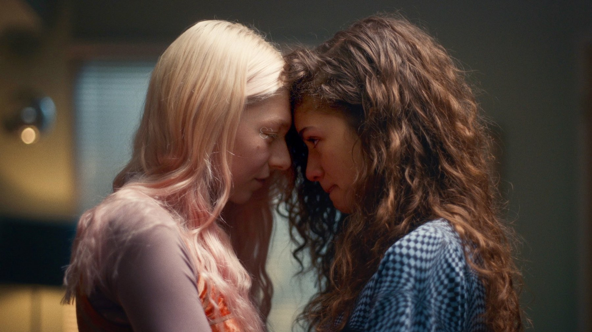

Euphoria – Stagione 3
Cinque anni dopo il liceo, Rue e gli altri fanno i conti con l'età adulta: Zendaya è immensa, le immagini restano potenti, ma la scrittura di Sam Levinson divide come mai prima
Poche serie hanno segnato una generazione come Euphoria, e poche hanno fatto aspettare così tanto il loro capitolo finale: tra la seconda e la terza stagione sono passati più di quattro anni. La stagione conclusiva della serie di Sam Levinson è andata in onda dal 12 aprile al 31 maggio 2026, in otto episodi, e in Italia è arrivata su Sky e NOW. Ora che il cerchio si è chiuso, possiamo dirlo: è la stagione più ambiziosa e la più divisiva di tutte. Questa recensione non contiene spoiler sul finale.
Di cosa parla la terza stagione di Euphoria?
La grande novità è un salto temporale di cinque anni. Il liceo è alle spalle e i protagonisti devono fare i conti con l'età adulta, ognuno con strade molto diverse. Rue, ancora Zendaya, lotta con la dipendenza e cerca un appiglio nella fede, mentre il suo lavoro la mette in situazioni sempre più pericolose. Accanto a lei ritroviamo Jacob Elordi, Maude Apatow e Hunter Schafer, poi Sydney Sweeney, Eric Dane, Alexa Demie e Colman Domingo, e tra i volti nuovi ci sono Sharon Stone, Rosalía, Adewale Akinnuoye-Agbaje e Toby Wallace.
Una lavorazione lunga e travagliata
Il rinnovo per una terza stagione era arrivato il 4 febbraio 2022, ma le riprese sono cominciate soltanto nel gennaio 2025 e si sono chiuse il 15 novembre 2025, secondo la ricostruzione di Wikipedia. Un'attesa di quasi tre anni tra l'annuncio e il primo ciak, che ha dato alla serie il sapore di un evento atteso e insieme di un'impresa a rischio. Il cast, nel frattempo, è cambiato: Storm Reid, Barbie Ferreira, Algee Smith e Austin Abrams non fanno parte di questo capitolo, mentre Martha Kelly, Chloe Cherry, Adewale Akinnuoye-Agbaje e Toby Wallace sono stati promossi nel cast principale. Tra i ruoli ricorrenti compaiono anche Marshawn Lynch, Asante Blackk, Rosalía e Sharon Stone.
La stagione porta con sé anche un lutto: Eric Dane, che aveva completato il lavoro sulla serie, è morto il 19 febbraio 2026 a causa della SLA. Vederlo in scena, sapendolo, dà ad alcune sequenze un peso diverso, e vale la pena ricordarlo qui.
Cosa funziona: Zendaya e lo stile
Se c'è un punto su cui tutti concordano, è Zendaya. La sua Rue adulta è fragile, sarcastica, disperata e luminosa nello stesso momento, e l'attrice regge sulle spalle episodi interi con una presenza che basta da sola a giustificare la visione. Anche Colman Domingo, nel ruolo di Ali, ha alcuni dei momenti più intensi della stagione.
Visivamente Euphoria resta una delle serie più riconoscibili della televisione: luce, colori e movimenti di macchina hanno ancora una forza rara, e la stagione, girata su pellicola in 65 e 35 mm con un formato CinemaScope mai usato prima nella serie, ha un'identità visiva diversa dalle precedenti.
La nostra sintesiZendaya è immensa. La storia che le hanno scritto intorno, molto meno.
Cosa non funziona
Il problema è la scrittura. Il salto di cinque anni allontana i personaggi dal percorso che avevamo seguito, e molte storie secondarie restano abbozzate o si chiudono in modo brusco. Il ritmo è irregolare, con episodi centrali che si perdono in deviazioni e un finale che ha diviso profondamente il pubblico. La critica internazionale è stata severa: a ottobre 2026 Rotten Tomatoes registra il 43% di recensioni positive su 77 giudizi e un pubblico ancora più freddo, il 38% di gradimento, mentre Metacritic dà 56 su 100, il risultato più basso della serie.
Il sentimento ricorrente tra i critici statunitensi, riassunto da Rotten Tomatoes, è quello di una stagione che vale meno della somma delle sue parti, una sequenza di trame forzate che lascia a metà un cast di talento. Molti spettatori affezionati alle prime due stagioni hanno scritto di avere quasi l'impressione di guardare un altro show. Noi non arriviamo a tanto: il tono è riconoscibile e certe scene hanno ancora il vecchio magnetismo. Ma capiamo la delusione, perché la sensazione di una storia che cambia direzione a ogni episodio è reale.
C'è poi il caso della musica. Labrinth, autore del suono che aveva definito la serie, il 13 marzo 2026 ha annunciato in un post di essere fuori dal progetto e ha ritirato tutta la sua musica dallo show, lasciando Hans Zimmer come unico compositore. Gaia Rotili su FRAMED osserva che senza quel battito originale le immagini hanno perso parte della loro anima: un'impressione che condividiamo, almeno in parte. Zimmer lavora con grande mestiere, ma la voce di Labrinth manca alla serie come mancherebbe un attore storico.

Ascolti e riconoscimenti
Nonostante le critiche, la stagione è stata molto vista. Gli otto episodi sono andati in onda su HBO dal 12 aprile al 31 maggio 2026 con una media di circa 366mila spettatori per puntata sulla televisione lineare statunitense; includendo HBO Max, Wikipedia riporta oltre 25 milioni di visualizzazioni totali. Sul fronte dei premi, la stagione ha ottenuto sette candidature agli Emmy, tra cui la terza nomination di Zendaya come miglior attrice protagonista in una serie drammatica. Un riconoscimento che conferma quanto detto: la forza di questa serie sta ancora nei suoi interpreti.
Vale la pena vederla?
Per chi ha seguito Euphoria dall'inizio, sì: è la conclusione di una storia importante, e Zendaya merita di essere vista fino all'ultima scena. Bisogna però sapere cosa aspettarsi: una stagione disordinata e a tratti respingente, che sceglie la provocazione e il simbolo più della coerenza narrativa. Tutte e tre le stagioni sono disponibili in abbonamento su Sky e NOW.
Se da un lato la scrittura di Sam Levinson è confusa e il finale divide, dall'altro la terza stagione di Euphoria conserva immagini potentissime e una Zendaya al suo meglio. Una chiusura imperfetta e coraggiosa per una serie che ha fatto la storia della televisione.
Domande frequenti
Euphoria 3 è l'ultima stagione?
Sì, HBO ha confermato che la serie si conclude con la terza stagione, andata in onda dal 12 aprile al 31 maggio 2026.
Quanti episodi ha Euphoria 3?
Otto episodi; l'ultimo si intitola In God We Trust.
Dove vedere Euphoria in Italia?
Tutte le stagioni sono disponibili in abbonamento su Sky e NOW.